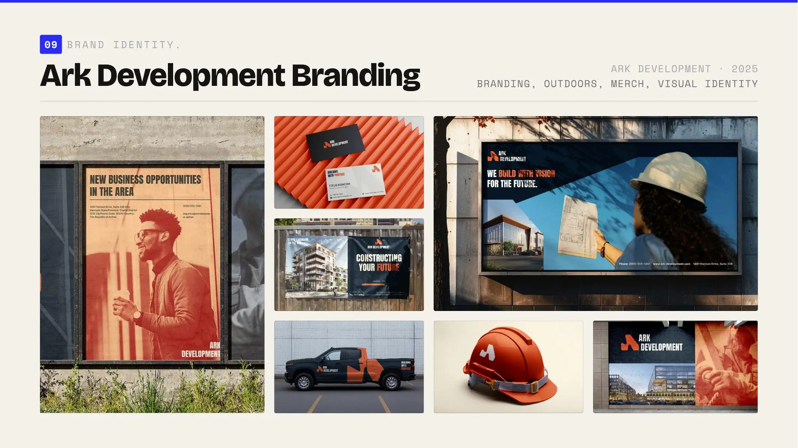
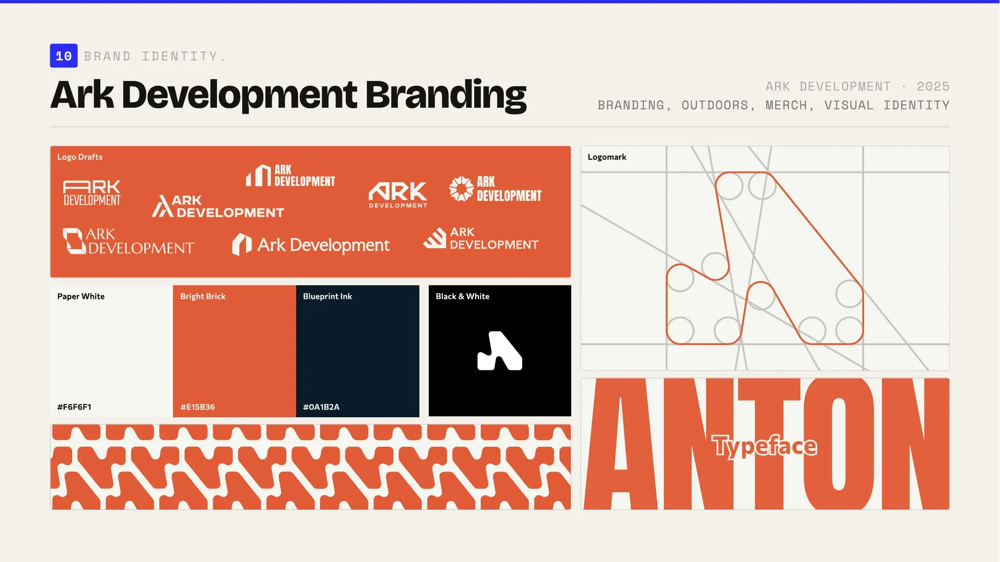

Case study 06
Ark Development.
Connecting capital and development through geometry.
- Role
- Brand & digital designer
- Period
- —
- Scope
- Identity, outdoor, merchandise, web
- System
- Focused case study

(A) — Context
Connecting capital and development through geometry.
The scope
Brand identity, property communication and digital applications.
The challenge
Ark Development needed to connect the abstract world of investment and capital with the physical spaces created from them, while remaining credible before a project is fully built.
My contribution
I developed a geometric identity around connection and architectural form, then explored how those principles extend across brand communication, physical applications and digital surfaces.
01
Geometry becomes a language for development.
Identity system
The mark, typography and compositions translate investment, connection and architectural structure into one confident visual system. The wider project tests that logic across communication and digital applications.

(B) — Outcome
A structured identity connecting investment with the spaces it creates.
- Built a distinctive geometric identity around capital, connection and development.
- Extended the logic across property communication, physical applications and digital use.
- Created a foundation that can support future development-specific campaigns.